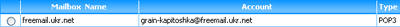
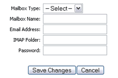
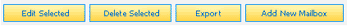

The Mailbox Manager allows users to check one or more remote email accounts for new email. Common tasks include:
Navigating the Mailbox Manager Page
The layout of the Mailbox Manager is similar to that of the Inbox, as all mailboxes are represented by a separate row in a mailbox list.
Each row includes a radio button, the mailbox name, the mailbox email address, as well as the type of email account.

Mailboxes act and are handled much like folders. Whenever email from a remote account is located and downloaded, those messages are stored in
the corresponding mailbox. In addition to the Mailbox Manager, mailboxes will appear in the main menu in the folder tree and are always considered
subscribed.
Adding a Mailbox
Users may add as many mailboxes as they wish. This is accomplished by clicking the "Add New Mailbox" button located both above and below the mailbox
list. When the button is clicked, a Mailbox Editor will appear in a new popup window.

Add a mailbox by indicating the type of email account, giving the mailbox a name (which can be anything you wish), entering the correct email address and
password for the account, and, if an IMAP account, entering the IMAP folder if necessary.
Deleting a Mailbox
Deleting a mailbox removes the local storage capability of a specific account's email messages and does not actually remove the user account from a host
computer.

Mailboxes can be easily removed from an account by marking the appropriate radio button next to the mailbox name and clicking the "Delete Selected"
button located above and below and mailbox list.
Exporting a Mailbox
At some time you might wish to export the email from a mailbox for the purpose of backing it up, moving it to a different account, etc.
To export a mailbox, first mark the appropriate radio button. Clicking the "Export" button from the mailbox options will bring up a dialogue
box which prompts you to select a location and name for the exported file. The mailbox is saved in text format with extension .mbox. Note,
you cannot export empty mailboxes.